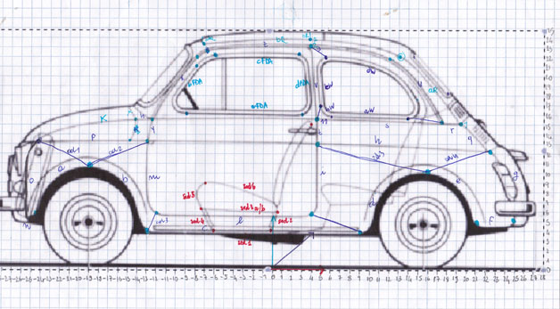
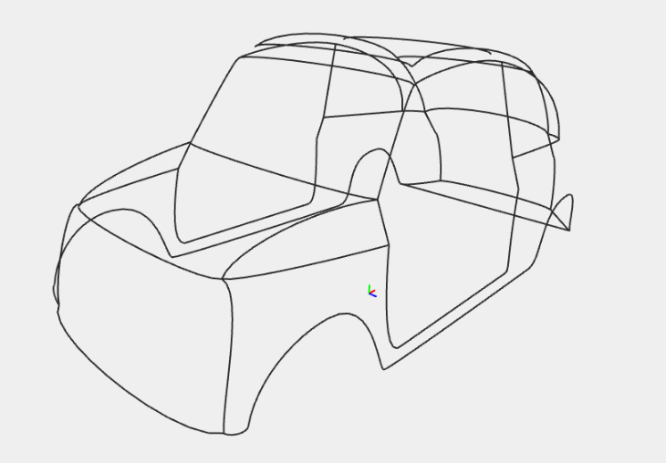
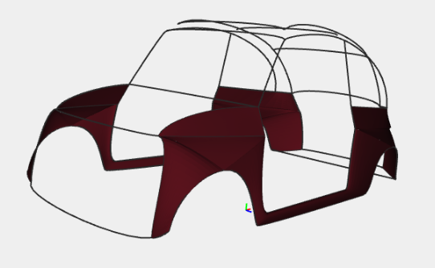
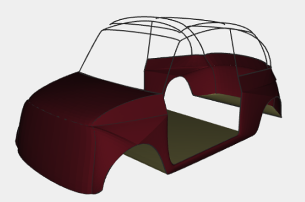
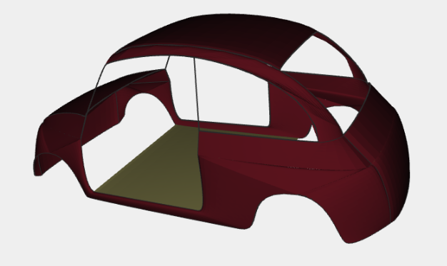
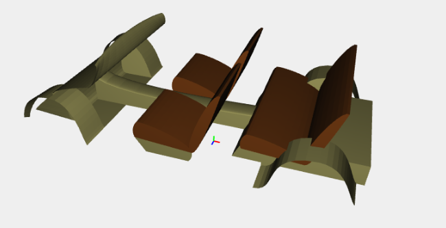
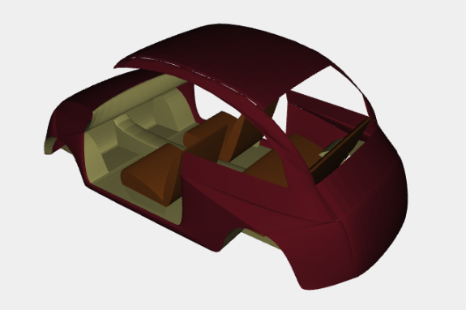
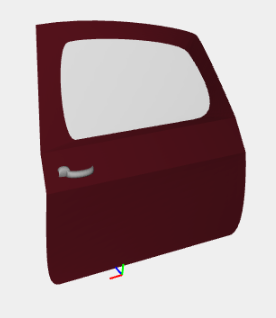

Object Description
Fiat 500 an icon of our time
Some cars go down in history for their technological or styling innovations. Others deserve to be remembered for the role they have played in the daily life of an entire generation or an entire country. Few succeed in combining the two: technology and sentiment. They leave an indelible mark, becoming a sort of icon of their age. The Nuova 500 is one of these. In a career lasting 18 years, from 1957 to 1975, exactly 3,893,294 were built, and it helped Italians and numerous other Europeans to satisfy a need for individual mobility that began to gain momentum from the early 1950s. The Nuova 500, even more than the 600 (1955), also brought the end of the post-war emergency period for motorisation and the automotive industry in Italy, and the start of the striving for comfort, albeit minimal and economical.
The Fiat 500 measuring only 2.97 metres (9 feet 9 inches) long, and originally powered by an appropriately sized 479 cc two-cylinder, air-cooled engine, the 500 redefined the term "small car" and is considered one of the first city cars.
Project
Hierarchical Decomposition
Side

Contours
Surfaces
  Interns
 Door
Wheel

Code Description
$ cd your_repo_root/repo_name
$ git fetch origin
$ git checkout gh-pages
$ cd your_repo_root/repo_name
$ git fetch origin
$ git checkout gh-pages
If you're using the GitHub for Mac, simply sync your repository and you'll see the new branch.
Designer Templates
We've crafted some handsome templates for you to use. Go ahead and continue to layouts to browse through them. You can easily go back to edit your page before publishing. After publishing your page, you can revisit the page generator and switch to another theme. Your Page content will be preserved if it remained markdown format.
Rather Drive Stick?
If you prefer to not use the automatic generator, push a branch named gh-pages to your repository to create a page manually. In addition to supporting regular HTML content, GitHub Pages support Jekyll, a simple, blog aware static site generator written by our own Tom Preston-Werner. Jekyll makes it easy to create site-wide headers and footers without having to copy them across every page. It also offers intelligent blog support and other advanced templating features.
Authors and Contributors
You can @mention a GitHub username to generate a link to their profile. The resulting <a> element will link to the contributor's GitHub Profile. For example: In 2007, Chris Wanstrath (@defunkt), PJ Hyett (@pjhyett), and Tom Preston-Werner (@mojombo) founded GitHub.
Support or Contact
Having trouble with Pages? Check out the documentation at http://help.github.com/pages or contact support@github.com and we’ll help you sort it out.